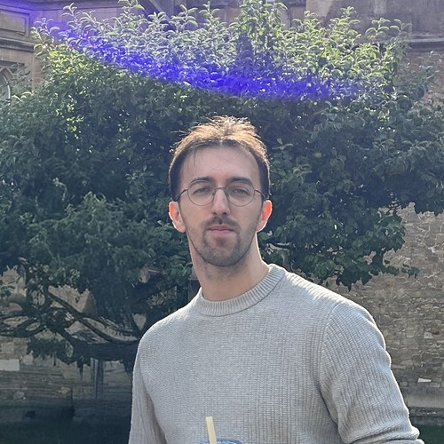

AI Safety Engineer @ Gray Swan AI
I build benchmarks and red teaming tools to stress test AI. My biggest works are AgentHarm (200+ citations) and segformer_b2_clothes (30M+ downloads on HuggingFace). Currently interested in eval awareness and automating AI safety research.

AI Safety Engineer at Gray Swan AI. I work on red teaming AI agents and building safety benchmarks. At Gray Swan I focus on automated red teaming (Shade), our public red teaming competitions (the Arena), and pre release safety evaluations for frontier models.
Currently interested in eval awareness and automating AI safety research, in the direction of work like Petri and AuditBench.
Outside of research, I'm a purple belt in BJJ (10th Planet London) turned boulderer, currently projecting V6. Based in London.
Open sourced subset of the AgentHarm benchmark for measuring harmfulness of LLM agents. 44 of 110 unique behaviors publicly available, covering 11 harm categories. Available on Hugging Face and Inspect AI.
200+ citationsFine tuned SegFormer for body parts and clothing segmentation. One of the most liked and most downloaded segmentation models on Hugging Face.
30,000,000+ downloadsPRs to Inspect AI for Hugging Face agent support. Sections on multi-modal and generative models for the HuggingFace Computer Vision course.
githubInterested in Gray Swan, collaborating on research, or just doing interesting things. Reach out.